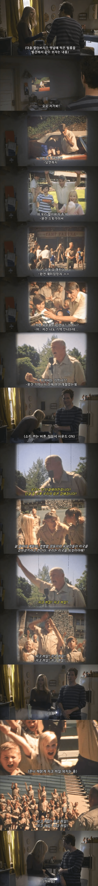

앗

앗
지크지온!
우리가 사랑했던


블랙미러였나 에피소드중에 지하에 있는 부모님 비디오 틀었다가 온갖 가학, 살해 강간 영상나오던 에피 있었지않나 ㅋㅋ ㅋ ㅋ ㅋ
있음. 아들이 자기 고향의 미제사건 다큐 찍으려는데 범인이 부모 ㅋㅋ
아 맞다 ㅋㅋㅋ ㅋ ㅋㅋ 그거였음
헨리호였나?
여주가 못생겨서 논란됐던걸로 기억
블랙미러 여주들 상태가 다들..
그래도 엠마 코린은 레전드였다
나도 그거 엄마가 이상한 옷 입고 등장하는 씬이 너무 기괴해서 종종 생각 남
유대인이 지배하는 미국은 맞는거 같은데
그 뒤에 내용이 진짜인데...
필라델피아는 언제나 맑음 인가
다시켜 이 운터맨쉬야
필라델피아는 언제나 맑음 진짜 시즌 한 3인가 4 까지는 최고였다. 그러다가 너무 정상에서 벗어나면서 노잼. 뭐든 적당해야..
지크지온!
지크하일!